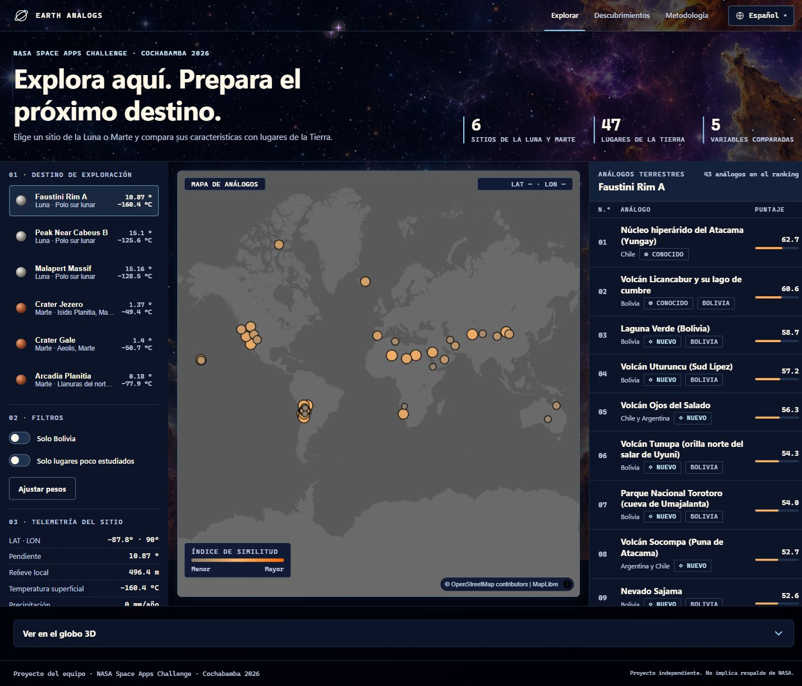

NASA SPACE APPS CHALLENGE · COCHABAMBA 2026
La Tierra, laboratorio de otros mundos.
Comparamos lugares terrestres con sitios de la Luna y Marte para explorar qué se parece, cuánto y dónde falla la analogía.
6sitios de la Luna y Marte
47lugares en la Tierra
5variables numéricas

Comparar con evidencia
Pendiente, relieve local, temperatura superficial, precipitación y albedo forman el índice. Las coincidencias de geología, hielo, cuevas y polvo se muestran por separado.
Buscar más allá de lo conocido
El filtro de Bolivia y la vista de lugares poco estudiados permiten explorar candidatos con el mismo método. «Nuevo» no significa un descubrimiento confirmado.
Cada analogía tiene límites
La Tierra no reproduce la gravedad reducida, el vacío lunar, la atmósfera tenue de Marte ni sus condiciones de radiación. Cada comparación muestra también sus diferencias y fuentes.